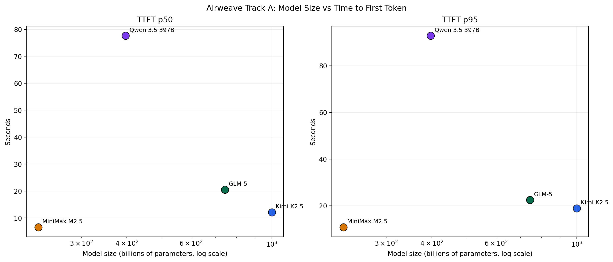
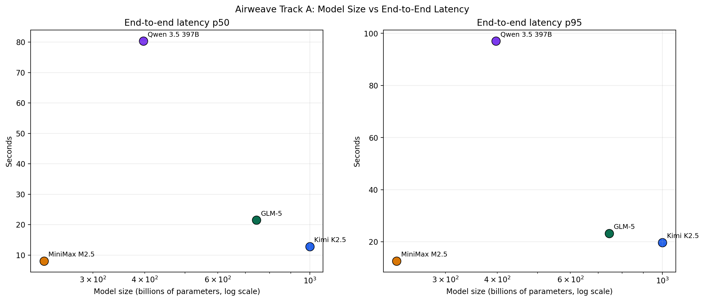
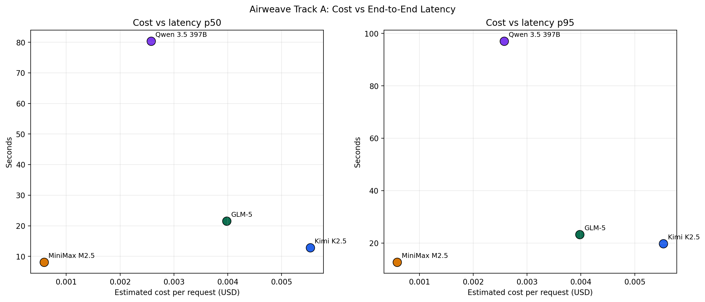
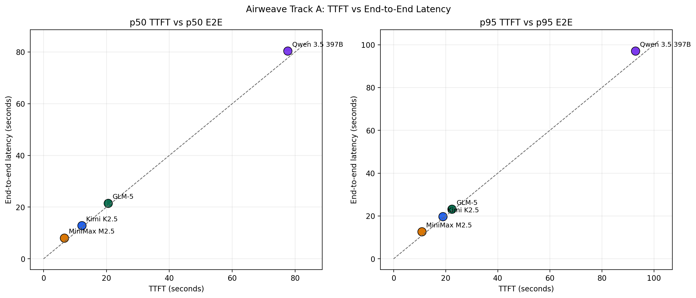

March 13, 2026. Track A retrieval benchmark, 5 samples per model, concurrency 1.
| model | params | ttft_p50_s | ttft_p95_s | lat_p50_s | lat_p95_s | serverless input / 1M | serverless output / 1M |
|---|---|---|---|---|---|---|---|
| zai-org/GLM-5 | 744B | 20.6 | 22.4 | 21.5 | 23.2 | $1.00 | $3.20 |
| Qwen/Qwen3.5-397B-A17B | 397B | 77.6 | 92.9 | 80.4 | 97.1 | $0.70 | $0.70 |
| MiniMaxAI/MiniMax-M2.5 | 228.7B | 6.6 | 10.8 | 8.1 | 12.6 | $0.30 | $1.20 |
| moonshotai/Kimi-K2.5 | 1T | 12.1 | 18.9 | 12.8 | 19.7 | $0.50 | $2.80 |



